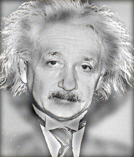
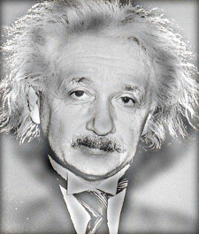

Project 1: Image Filtering and Hybrid Images
Example of a hybrid image.
The purpose of this project is to implement a dynamic filter function in python that is able to apply any odd dimensional filter to an image. Furthermore, the filter function will be used to assist in the creation of hybrid images. The outline of this report will be provided here:
- Image Filtering
- Hybrid Images
- Conclusion & Extra Credit
Part 1: Image Filtering
In Part 1, the purpose was to create a python def called my_imfilter() which takes in images and a filter in numpy nd-array format. The filtering algorithm uses linear filtering, which utilizes a process of 'sliding' through a padded image with window sizes that match the dimensions of the filter. Subsequently, by multiplying the 'window' with the filter and summing all the values, we are able to get a new index value for the filtered image.
Step 1: Padding
Before we are able to apply the filter, we have to pad the image with 0's in excess of the filter's distance from its center for the row side and column side.
#creating a padded zero matrix of the original image
f_row = len(filter)
f_col = len(filter[0])
pad_row = (int)(f_row/2)
pad_col = (int)(f_col/2)
padded_shape = (2*pad_row + im_row, 2*pad_col + im_column, im_z)
padded_image = np.zeros(padded_shape)
Step 2: Applying the Neighborhood Filtering Algorithm
Next, the 'sliding' window method is implemented where each window is multiplied by the filter and summed to produce a resulting value for the final filtered image.
#neighborhood filtering
for x in range(0, len(filtered_image)):
for y in range(0, len(filtered_image[0])):
for z in range(0, len(filtered_image[0][0])):
filtered_image[x][y][z] = np.sum(padded_image
[x:x+f_row, y:y+f_col,z]*filter)
Step 3: The Result
Using my_imfilter(), the result of a low frequency version of the original image was returned.


|
Part 2: Hybrid Images
The Hybrid Image is the resultant of a low frequency image added with a high frequency image. To obtain the low frequency image, use the my_imfilter() created in part 1. To obtain a high frequency image, subtract the low frequency image to the original image.
#obtaining a hybrid_image
low_frequencies = my_imfilter(image1,filter)
high_frequencies = image2 - my_imfilter(image2, filter)
hybrid_image = low_frequencies + high_frequencies
Results
|
|

|
Additional Results


 

|

|

|

|
Part 3: Conclusion & Extra Credit
What I noticed doing Experiment 1 is that the image with the natural lower frequency needs to be the low frequency image while constructing the hybrid image for the best effect. Furthermore, maintaining the cutoff frequency at 7 seems to yield the best results as well. When increasing the cutoff frequency, the blurry image became too convoluted. This did not produce a good effect in the scaled image because the blurred picture was not apparent in the smaller frames. By decreasing the cutoff frequency, the 'blurry' image was less 'blurred' which resulted the low frequency image to be too dominant in the larger images of the scaled results. For my extra credit, I combined the image of the leaning tower of Pisa to the Eiffel tower. At first I used the the Pisa as the high frequency image and the Eiffel as the low frequency image. However, In the larger scale, the Pisa did not appear to be very clear and looked transparent.
By switching the images I think the hybrid turned out better mainly because the Eiffel high frequency image was much more defined than the Pisa high frequency image.